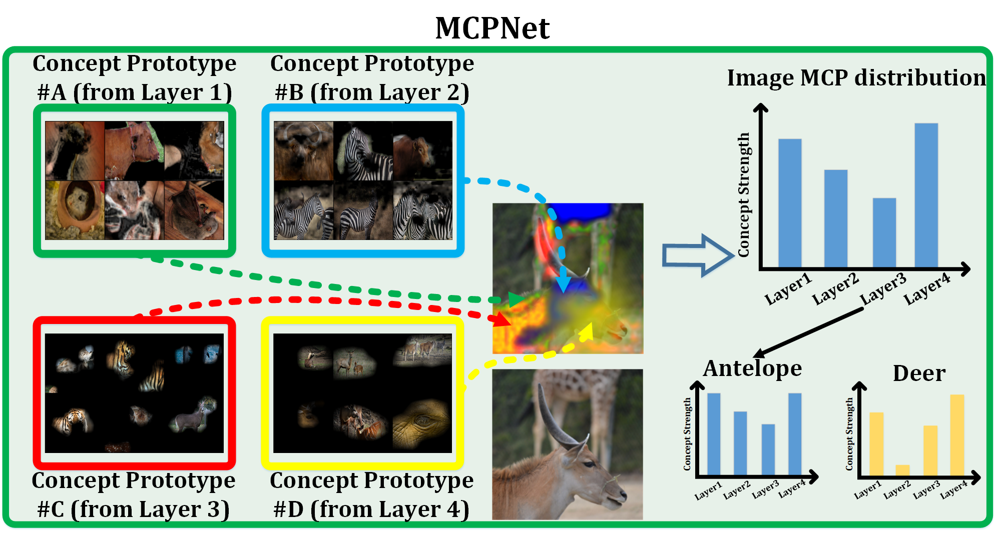
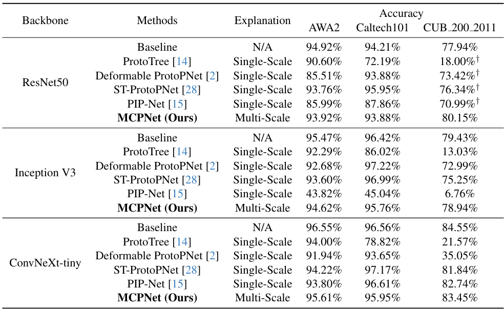
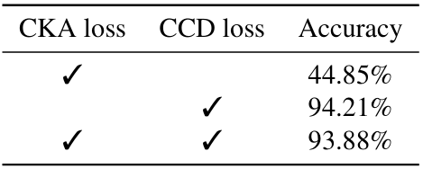
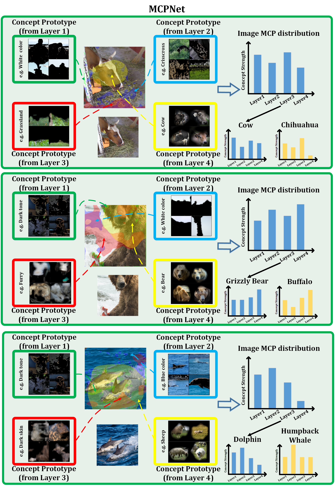

MCPNet:An Interpretable Classifier via Multi-Level Concept Prototypes
Bor-Shiun Wang1, Chien-Yi Wang2*, Wei-Chen Chiu1*
National Yang Ming Chiao Tung University1, NVIDIA Research2
*Equal advising

Abstract
Recent advancements in post-hoc and inherently interpretable methods have markedly enhanced the explanations of black box classifier models. These methods operate either through post-analysis or by integrating concept learning during model training. Although being effective in bridging the semantic gap between a model's latent space and human interpretation, these explanation methods only partially reveal the model's decision-making process. The outcome is typically limited to high-level semantics derived from the last feature map. We argue that the explanations lacking insights into the decision processes at low and mid-level features are neither fully faithful nor useful. Addressing this gap, we introduce the Multi-Level Concept Prototypes Classifier (MCPNet), an inherently interpretable model. MCPNet autonomously learns meaningful concept prototypes across multiple feature map levels using Centered Kernel Alignment (CKA) loss and an energy-based weighted PCA mechanism, and it does so without reliance on predefined concept labels. Further, we propose a novel classifier paradigm that learns and aligns multi-level concept prototype distributions for classification purposes by Class-wise Concept Distribution (CCD) loss. Our experiments reveal that our proposed MCPNet, while being adaptable to various model architectures, offers comprehensive multi-level explanations with maintaining the classification accuracy. Additionally, its concept distribution-based classification approach shows improved generalization capabilities in few-shot classification scenarios.
Method
New Classify Paradigm
MCPNet introduces a new training paradigm for classification tasks and provides hierarchical concept explanations for the classification results. First, calculating concept responses in different layers generates the Multi-level Concept Prototype Distribution (MCP distribution). Each layer will learn the distinct, independent concept by reducing the similarity between different concept segments measured by the Centered Kernel Alignment (CKA). Next, the representative MCP distribution for each class (class MCP distribution) is calculated by averaging all the MCP distributions of images in the same class in the training set. Finally, the classification is made by distribution matching between the image MCP distribution and the class MCP distributions. The image will belong to the class with the closest distance calculated by JS divergence.

Center kernel alignment (CKA) loss
Class-aware Concept Distribution (CCD) loss
Experiments
Main quantitative result
We compare the performance of MCPNet with various methods on different datasets to show our MCPNet can provide multi-scale explanations without compromising the performance.

Ablation study
We show the effect of our proposed constraints, Centered Kernel Alignment (CKA) loss and Class-aware Concept Distribution (CCD) loss.
The purpose of the CKA loss is to disentangle the semantics between different segments to make each prototype learn a distinctive meaning, which causes poor performance due to not distinguishing the feature between different classes. On the other hand, the CCD loss is used to discern the images' MCP distribution to the corresponding class, which results in high accuracy.

However, without the CKA loss, there is an observed increase in similiarty among concept segments, leading to duplicated concept prototypes.

Explantions comparisons
